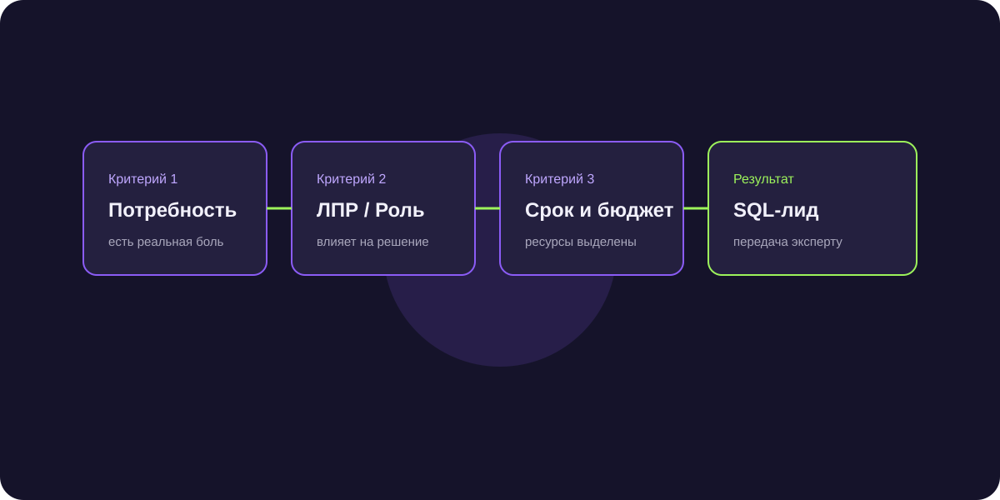

Как массово валидировать и очистить базу B2B-контактов: софт, алгоритмы и защита домена
Отправка рассылок или звонки по непроверенной базе приводят к бану доменов, блокировке телефонных номеров операторами и сливу времени сейлзов. Разбираем технологию глубокой гигиены данных.

Короткий ответ
Валидация базы контактов — это автоматическая проверка актуальности данных (email, телефоны, ФИО и статус компании) перед запуском аутрича. Включает удаление дублей, проверку доступности почтовых ящиков через SMTP-хэндшейк без отправки письма, валидацию мобильных номеров через HLR-запросы и фильтрацию ликвидированных юрлиц по данным ФНС.
3 этапа комплексной очистки контактной базы
- Валидация Email-адресов: удаление спам-ловушек, синтаксических ошибок, адресов на разовых доменах и проверка MX/SMTP записей (bounce rate должен быть строже 2%).
- HLR-валидация телефонных номеров: проверка активности SIM-карты в сети оператора без совершения фактического звонка.
- Обогащение данных по ИНН: проверка компании на банкротство, ликвидацию, соответствие ОКВЭД и выручке через API Контур.Фокус или DaData.
Чем опасна работа по невалидной базе
Если показатель отказов (Bounce Rate) превышает 3–5%, почтовые провайдеры (Яндекс, Mail.ru, Google) мгновенно отправляют весь ваш корпоративный домен в спам-лист. Восстановление репутации домена занимает месяцы.
Инструменты и сервисы для массовой очистки данных
Для валидации почт: Mailchecker, ZeroBounce, Hunter. Для валидации телефонов: HLR-шлюзы через телеком-провайдеров. Для стандартизации адресов и ФИО: сервис DaData.
Частые вопросы по теме
Как часто нужно проводить повторную чистку базы?
B2B-базы устаревают со скоростью около 25–30% в год (ЛПР увольняются, компании меняют адреса). Очистку нужно проводить перед каждой массовой кампанией.
Можно ли проверять контакты автоматически в момент заведения в CRM?
Да, настройка вебхуков DaData в amoCRM позволяет автоматически исправлять опечатки в номерах и подтягивать реквизиты компании по ИНН в момент создания лида.
Снижение Bounce Rate с 8.4% до 0.6% и рост доставляемости до 99%
Предварительная фильтрация базы через многоступенчатый валидатор спасла рабочий домен компании от блокировки спам-фильтрами.